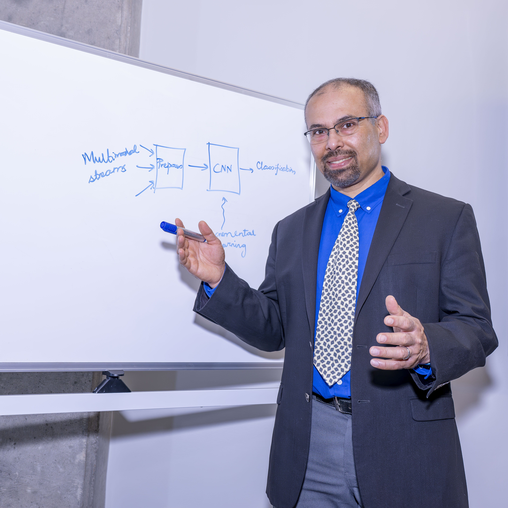

I am a Professor in the School of Electrical and Computer Engineering and the Department of Computer Science at Purdue University, in the sleepy and charming university town of West Lafayette, Indiana. I am the Co‑founder and CTO of a cloud computing startup, KeyByte. I have had the joy of graduating 27 PhD students and 30 Masters thesis students from my group, who are all in various stages of building wonderful careers in academia and industry.
I was born and grew up in the overwhelming, contradiction‑filled, warm, embracing city of Calcutta (renamed Kolkata) in India. With my father's job as a civil engineer in the Federal Government of India, I had the fortune, though it did not seem that great at the time, of traveling through many parts of India. I did my undergraduate studies at the Indian Institute of Technology, Kharagpur, in Computer Science, and after that, following a hallowed and well‑worn path, I came to the US for MS and PhD at the University of Illinois at Urbana‑Champaign. Four short years later, I added a "Dr." to my name and was out into the bright lights of industry, starting work at the IBM T. J. Watson Research Center in New York.
A decade and a half later, I am still idealistic, still wonder‑struck that a profession can be so rewarding.
A few years of learning from, and then working together with, some of the greats of computer science at IBM, the academic bug bit me, and I headed back to the mid‑west to become an idealistic Assistant Professor at Purdue University. One scenic detour along the way has been a successful startup I did with three colleagues, SensorHound Innovations, on embedded system reliability. Currently at Purdue, I lead the National Science Foundation center CHORUS (2024–current) on resilient cyber‑physical systems, and the Army's Artificial Intelligence Innovation Institute (A2I2) (2020–current) on assured autonomous operations.
Our technical community has been generous with awards, acknowledging our technical and societal contributions. Our work has received 13 best paper or runner‑up for best paper awards, and two Test‑of‑Time awards (DSN 2022; Middleware 2025). I am a nominated member of the International Federation for Information Processing (IFIP), a Fellow of the Institute of Engineering and Technology (2022) and of the Asia Pacific Artificial Intelligence Association (2025), and a recipient of the Humboldt Award (2018).
On a personal level, I maintain strong connections to India, serving as International Visiting Faculty at IIT Kharagpur and IIT Bombay. I have been a 20+ year volunteer with Asha for Education, a non‑profit that has been supporting basic education for underprivileged children in India since 1991. I love to play tennis — surface no matter — and for those snowy days in the Midwest, pickleball would do equally well. My wife is also a Professor at Purdue, and she has kept me sane (to some extent), on my toes (especially when she zips past me during our bike rides), energetic (whenever I feel like lolling too much, she lets me know), and fun (no professorial airs, please).

Same habit in every room I'm in, from the classroom to the boardroom: sketch it out, then build it.